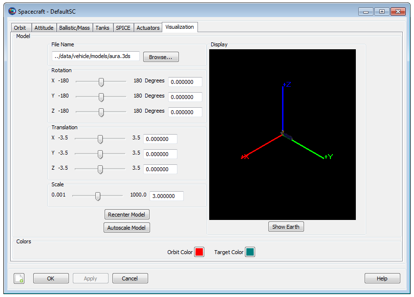

SpacecraftVisualizationProperties — The visual properties of the spacecraft
The Spacecraft Visualization Properties lets you define a spacecraft model, translate the spacecraft in X,Y, Z directions or apply a fixed rotation to the attitude orientation of the model. You can also adjust the scale factor of the spacecraft model size. GMAT lets you set orbit colors via the spacecraft visualization properties as well. You can set colors to spacecraft orbital trajectories and any perturbing trajectories that are drawn during iterative processes. See Color documentation for discussion and examples on how to set orbital colors using Spacecraft object's OrbitColor and TargetColor fields. Also see the Fields section below to read more about these two fields. The Spacecraft visualization properties can be configured either through GMAT’s GUI or the script interface.
| Field | Description | ||||||||||||
|---|---|---|---|---|---|---|---|---|---|---|---|---|---|
| ModelOffsetX | This field lets you translate a spacecraft in +X or -X axis of central body's coordinate system.
| ||||||||||||
| ModelOffsetY | Allows you to translate a spacecraft in +Y or -Y axis of central body's coordinate system.
| ||||||||||||
| ModelOffsetZ | Allows you to translate a spacecraft in +Z or -Z axis of central body's coordinate system.
| ||||||||||||
| ModelRotationX | Allows you to perform a fixed rotation of spacecraft's attitude w.r.t X-axis of central body's coordinate system.
| ||||||||||||
| ModelRotationY | Allows you to perform a fixed rotation of spacecraft's attitude w.r.t Y-axis of central body's coordinate system.
| ||||||||||||
| ModelRotationZ | Allows you to perform a fixed rotation of spacecraft's attitude w.r.t Z-axis of central body's coordinate system.
| ||||||||||||
| ModelScale | Allows you to apply a scale factor to the spacecraft model's size.
| ||||||||||||
| ModelFile | Allows you to load spacecraft models that are in .3ds model formats.
| ||||||||||||
| OrbitColor | Allows you to set available colors on spacecraft
orbits. The spacecraft orbits are drawn using the
OrbitView graphics displays. The colors can
be identified through a string or an integer array. For example:
Setting spacecraft's orbit color to red can be done in following
two ways:
| ||||||||||||
| TargetColor | Allows you to set available colors on a spacecraft's
perturbing trajectories during iterative processes such as
Differential Correction or Optimization. The perturbing
trajectories are drawn through the OrbitView
resource. The target color can be identified through a string or
an integer array. For example: Setting spacecraft's perturbing
trajectories to yellow color can be done in following two ways:
|
The figure below shows the default settings for the Spacecraft Visualization Properties resource:
|  |
The GUI interface for Spacecraft Visualization Properties is contained on the Visualization tab of the Spacecraft resource. You can configure visualization properties of the spacecraft and visualize the changes in the Display window.
Within the Display window, you can Left click and drag your mouse to change camera orientation. Camera orientation can be changed in Up/Down/Left/Right directions. You can also Right click and drag your mouse to zoom in and out of the Display window. Right click and moving the cursor in Up direction helps to zoom out and moving the cursor in Down direction helps to zoom in.
GMAT lets you define any spacecraft model but currently GMAT supports only .3ds model format. Several .3ds spacecraft model formats are available here. You can also download more .3ds models by clicking here. Most of these models are in .3ds format, which can be read by most 3D programs.
GMAT lets you apply fixed rotation to the attitude orientation of the spacecraft model or translate the model in any of the X, Y and Z directions. You can also apply a scale factor to the selected spacecraft model to adjust the size of the model. Any changes that are made to the spacecraft model, attitude orientation, translation or scale size factor will also be displayed in OrbitView resource’s graphics window. The configured spacecraft visualization properties will only show up in OrbitView graphics window after you have run the mission. See OrbitView resource’s user-specification document to learn more about OrbitView graphics window.
This example shows you how to configure Spacecraft Visualization Properties resource. All values are non-default values.
Create Spacecraft aSat
aSat.ModelFile = '../data/vehicle/models/aura.3ds'
aSat.ModelOffsetX = 1.5
aSat.ModelOffsetY = -2
aSat.ModelOffsetZ = 3
aSat.ModelRotationX = 180
aSat.ModelRotationY = 180
aSat.ModelRotationZ = 90
aSat.ModelScale = 15
Create Propagator aProp
Create OrbitView anOrbitView
anOrbitView.Add = {aSat, Earth}
BeginMissionSequence
Propagate aProp(aSat) {aSat.ElapsedSecs = 9000}